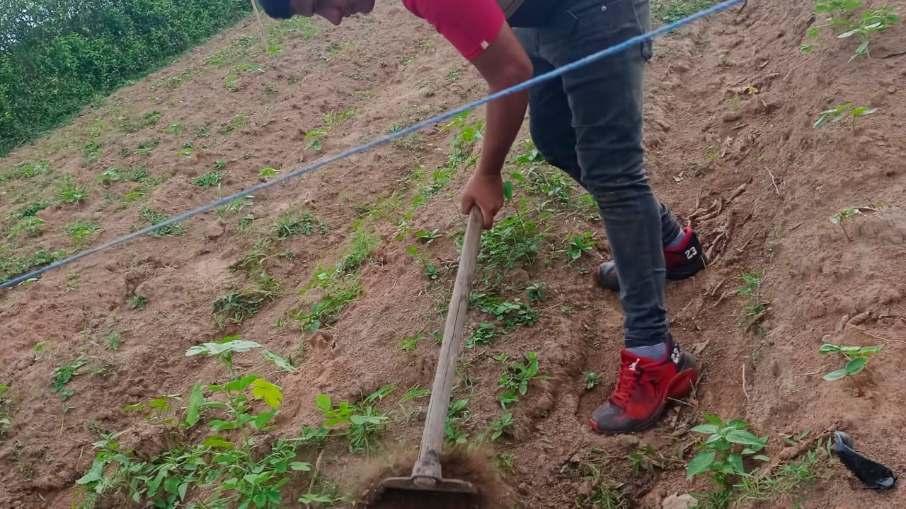
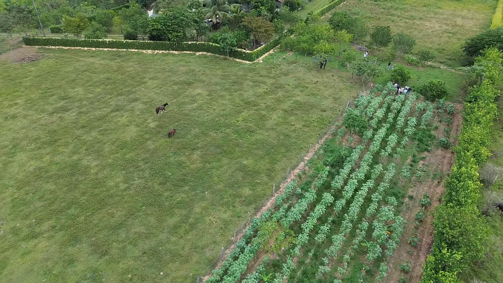
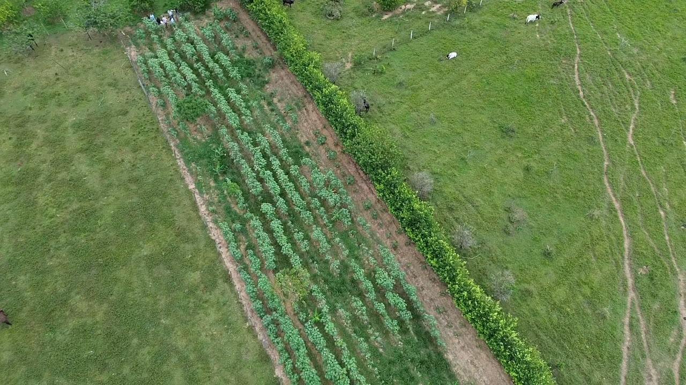
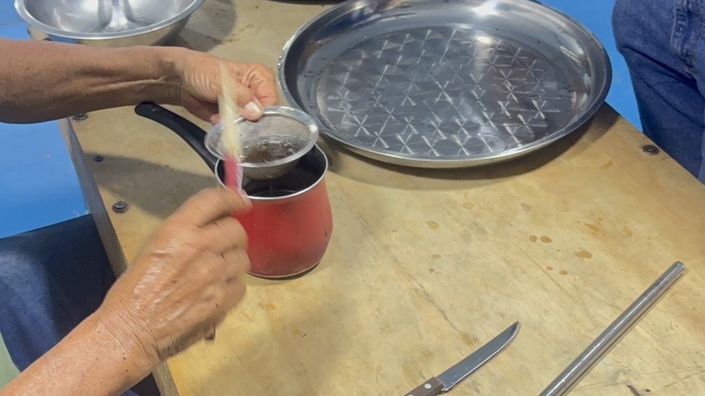
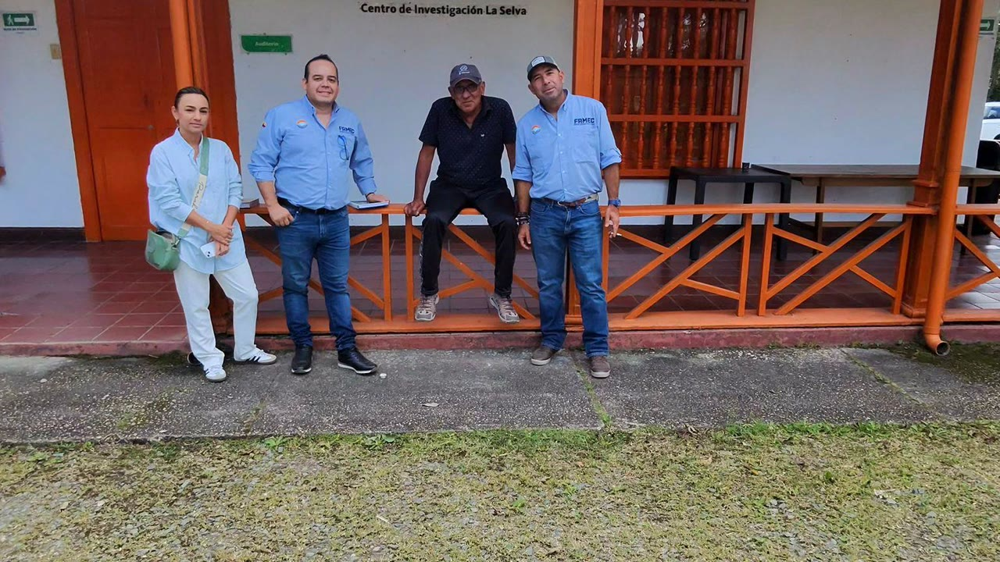

Federación Agroenergética · Meta, Colombia
FAMEC articula comunidades rurales, gobierno, ciencia e industria para producir aceite de ricino y biocombustibles que recuperan suelos, reducen emisiones y generan ingreso digno al campesinado colombiano.
Conócenos
Un recorrido por nuestros cultivos, procesos y comunidades en el departamento del Meta.

Nuestra identidad
FAMEC es una federación gremial de segundo nivel sin ánimo de lucro, puente estratégico entre el gobierno nacional, la cooperación internacional y los territorios más apartados de Colombia.
A partir de 2026 concentramos toda nuestra capacidad técnica y financiera en un solo cultivo con poder transformador real: la higuerilla (Ricinus communis). Una semilla pionera que regenera suelos degradados, produce energía limpia y devuelve dignidad al campesinado colombiano.
Lo que nos mueve
Sembrar en Colombia una agricultura que regenere la tierra, produzca energía limpia y devuelva ingreso digno al campesinado.
La higuerilla regenera suelos degradados, descompacta con raíces de hasta 6 m y fija 10–15 t CO₂/ha/año.
Aceite de ricino para biodiésel, lubricantes, bioplásticos y combustible de aviación sostenible (SAF).
Acceso a un mercado mundial de $2.200M USD, hoy dominado por India. Colombia puede capturar cuota con trazabilidad.
Modelo asociativo con compra garantizada. El productor es socio, no proveedor. Sin maquinaria pesada ni grandes extensiones.
Cómo operamos
Cinco eslabones integrados, un solo propósito: del diagnóstico de suelo hasta el mercado internacional.
Diagnóstico de suelos y selección de productores.
Insumos certificados y acompañamiento agronómico.
Precio mínimo acordado y pago oportuno.
Extracción de aceite + procesamiento de torta.
Mercado nacional e internacional trazable.
Lo que producimos
De la semilla al producto final: aceite, energía y subproductos con alto valor industrial.

Producto principalAceite vegetal no comestible con el 89% de ácido ricinoleico, el más alto de cualquier aceite vegetal conocido. Apto para uso industrial, farmacéutico y cosmético con trazabilidad hectárea por hectárea.
 Energía renovable
Energía renovable
Una hectárea de higuerilla produce hasta 1.300 litros de biodiésel al año, aproximadamente tres veces el rendimiento de la soya. Apto para flotas vehiculares, aviación (SAF) y generación eléctrica rural.
 Subproducto
Subproducto
Residuo sólido del proceso de extracción con alto contenido de nitrógeno. Fertilizante orgánico potencial para devolución al suelo o formulación de abonos, cerrando el ciclo de la economía circular.
 Mercado industrial
Mercado industrial
El aceite de ricino tiene más de 400+ aplicaciones industriales: lubricantes de alta temperatura, polímeros bioplásticos, nylon-11, tintas, barnices, productos farmacéuticos y cosméticos de grado premium.
En territorio
Imágenes de nuestros cultivos, procesos y comunidades en el Meta.




Si eres productor rural, cooperativa, aliado técnico o inversionista, FAMEC tiene un camino para ti. Únete a la federación de la higuerilla en Colombia.
FAMEC · NIT 901823266-2 — Federación Agro Energética Mixta de Colombia · federacionfamec@gmail.com · 314 406 8801 · www.famec.co · Calle 33 Sur #46-03, Barrio Montecarlo, Villavicencio, Meta